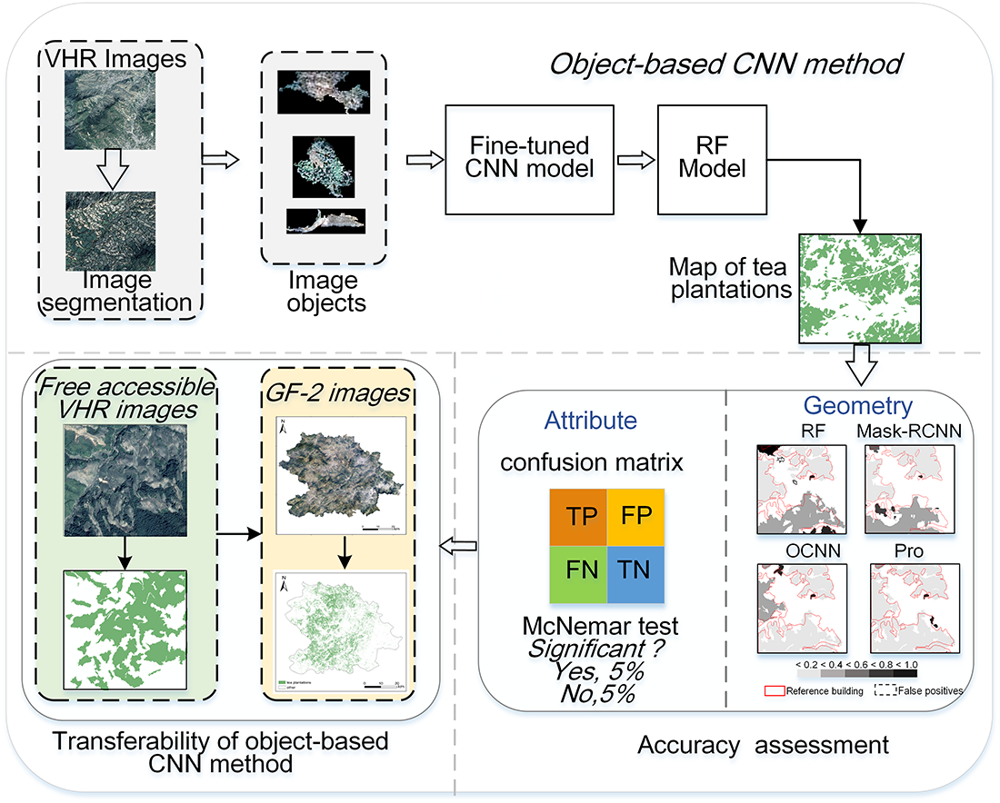

7 Classification2
7.1 Summary
7.1.1 Object based image analysis (OBIA)
Considering shapes based on the similarity(homogeneity) or difference(heterogeneity) of the cells(superpixels)
Simple Linear Iterative Clustering(SLIC): the most common method for superpixel generation
R packages: Supercells, SegOptim
7.1.2 Sub pixel analysis
Also termed: Sub pixel classification, Spectral Mixture Analysis(SMA), Linear Spectral unmixing
SMA: determines the proportion or abundance of landcover per pixel
- Assumption: the reflectance measured at each pixel is represented by the linear sum of endmembers weighted by the associated endmember fraction
considerations:
pixel purity
number of endmembers
multiple endmember spectral analysis
7.1.3 Accuracy assessment
TP (True Positive): models predicts positive class correctly
TN (True Negative): models predicts negative class correctly
FP (False Positive): models predicts positive class incorrectly
FN (False Negative): models predicts negative class incorrectly
PA (producer’s accuracy)=\(\frac{TP}{TP+FN}\)
UA (user’s accuracy)=\(\frac{TP}{TP+FP}\)
OA (the overall accuracy)=\(\frac{TP+TN}{TP+FP+FN+TN}\)
Errors of omission = 100 - PA
Errors of commission = 100 - UA
kappa coefficient: to express the accuracy of an image compared to the results by chance
F1 score: combines both recall(PA) and precision(UA)
- F1 = \(\frac{TP+TN}{TP+\frac12*(FP+FN)}\),(0,1)
Receiver Operating Characteristic Curve (the ROC Curve): to minimize noise from radar to identify true positives and not miss aircraft
- Area Under the ROC Curve(AUC/AUROC): simply the area under the curve, could help us compare models easily.
Train and Test Split: simply holding back a percentage of the original data used to train the model and then test it at the end.
cross validation
leave one out cross validation: an extreme version of cross validation
- use all the training data except 1 and repeats though all of it
spatial cross validation
Tobler’s first law: the near things are more related than distant things.
spatially partition the folded data, folds are from cross validation
7.2 Application
Pixel based analysis is appropriate for moderate and low resolution, however, as the spatial resolution of satellite images has become finer it makes difficult to classify at the pixel level(Jovanović et al. 2021). It relies on spectral values of individual pixels, is not able to capture the spatial context and variations of different land covers in high-resolution images(Campbell and Wynne 2011). OBIA as an alternative method could bypass the problem of pixel based analysis by by grouping a number of pixels into shapes with a meaningful representation of the objects.
Besides, OBIA has clear advantages in cooperating multi-source data, such as data obtained from Digital Terrain Maps (DTMs) and other thematic maps. This method also enhances classification tasks, especially in accurately mapping heterogeneous landscapes(Xofis and Poirazidis 2018).
Recent studies have been combining OBIA and Convolutional Neural Network (CNN), which has been shown to effectively extract high-level image features, maintain clear boundaries of image objects(Fu et al. 2019; Wang et al. 2018). In the research conducted by Tang, Li, and Wang (2020), they combined OBIA with CNN to form an object-based CNN to extract the tea plantations(sees Figure 1). They revealed that the use of CNN in OBIA setting can effectively improve mapping accuracy, particularly in terms of geometric accuracy.

7.3 Reflection
- A very important point in image classification is transferability especially in remote sensing and image analysis applications, where the data can have significant variations in terms of spatial resolution, spectral bands, and imaging sensors. In such cases, a classifier that can transfer well across different datasets and imaging conditions is essential to ensure reliable and accurate results.